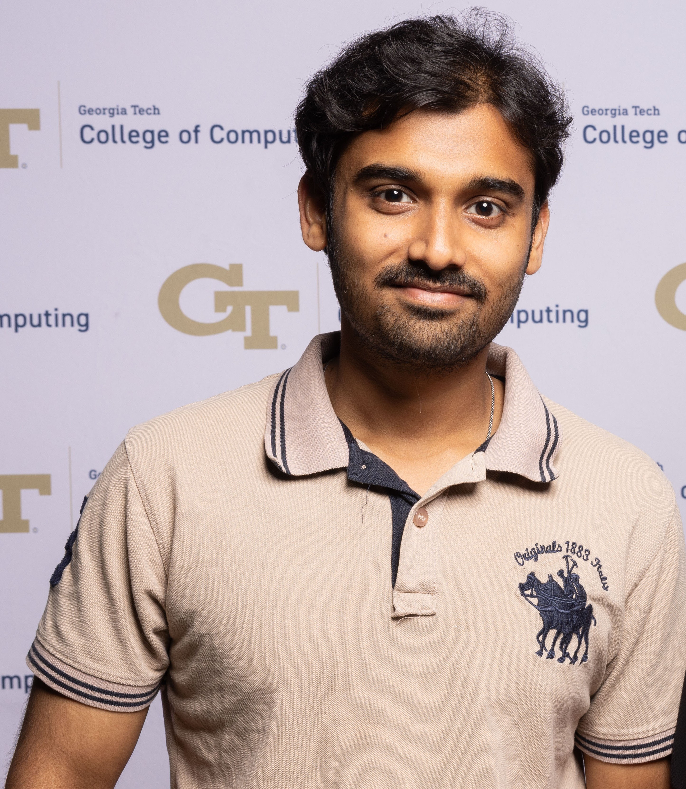

Performance is a first-principles problem. I solve it at the hardware–software boundary.
currently · diffusion inference on AWS Trainium2 at Yotta Labs
Hi! I'm Vijay, an inference performance engineer. I recently finished my M.S. in Computational Science & Engineering at Georgia Tech, and I now work at Yotta Labs on Difflet, an open-source, multi-backend engine for serving diffusion transformers, with AWS Trainium2 as its primary target. It supports text-to-image and text-to-video models such as FLUX, Qwen-Image, Wan, HunyuanVideo, and LTX-2. I take a profile-first approach: measure before changing any code, so every optimization is driven by what the hardware is actually doing, not by guesswork.
My path here has run through three kinds of workload. It started in HPC: at Georgia Tech I optimized a large-scale GPGPU scientific code at the kernel level, reading PTX/SASS when the counters didn't add up and tuning CUDA-aware MPI over NVLink and InfiniBand. Then LLM inference on GPUs: quantized decode kernels for llama.cpp, and benchmarking production kernels inside SGLang on Blackwell. Now diffusion inference on a chip with no warps at all. The hardware changes; the first principles don't: arithmetic intensity, data reuse, memory movement, and finding where the machine is waiting.
- AWS Trainium2
- NVIDIA Blackwell SM120
- Hopper H200
- Ampere A100
Open source
Difflet — multi-backend diffusion inference engine
An open-source, multi-backend engine for running diffusion transformers, with Trainium2 as the primary target, from one CLI to an OpenAI-compatible server. I built its PyTorch-native backend (TorchNeuron, torch.compile) alongside the existing XLA/AoT path and brought up Wan 2.1/2.2 (14B text-to-video) and FLUX.1-dev (12B text-to-image) end to end: per-rank sharded checkpoint loading, per-block compilation, and a multi-process torchrun runtime. On top of that sit tensor, sequence, context (Ulysses, and ring attention with log-sum-exp merging) and data parallelism, plus TeaCache step skipping. Against the AoT backend, cold compile dropped 4.3× and per-step latency 23%, while meeting fp32-reference accuracy gates.
SGLang — NVFP4 W4A16 GEMM on Blackwell SM120
Assigned an open issue: decide whether FlashInfer's bf16×fp4 kernel should replace the incumbent Marlin path for dense NVFP4 W4A16 layers on SM120. Benchmarked both across 21 configurations on an RTX PRO 6000 Blackwell — three Qwen3.6-27B GEMM shapes, decode batch sizes 1–128, CUPTI timing with CUDA graphs and cold L2, one shared quantization so both kernels read byte-identical weights. Marlin won 15 of 21; FlashInfer's cute-dsl backend was ~23% more accurate in all of them. Both plateau at 57–64% of the card's 1597 GB/s on the MLP shapes and 82% on the output projection — the shape moves that number more than the kernel choice does. The work also established that the Marlin path is numerically correct on SM120, which CI had never asserted; that fix is merged.
Projects
Q4_K GEMV kernel for llama.cpp
A custom quantized GEMV kernel for the LLM decode phase, iterated to within 11% of NVIDIA's production kernel. Along the way: five profiled kernel variants, a 30% throughput win from 4-warp parallelism, and a memory-coalescing bottleneck that turns out to affect upstream implementations too.
LLM kernels lab
A running study of state-of-the-art LLM kernels — reading them, profiling them, and cataloguing the optimization strategies behind each. Recent findings: mxfp4, the format gpt-oss ships in, decodes ~1.4× slower than q4_0 for the same byte budget in llama.cpp, blocked from the obvious fix by a 17-byte block layout.
Multi-GPU communication benchmarking suite
Latency and throughput benchmarks for collective operations across the MPI, NCCL, and UCX stacks, from a baseline AXPY kernel up to multi-node runs — including a custom tree-based reduction that outperforms CUDA-Aware MPI by 4.4× and a 35× latency reduction at 256M elements.